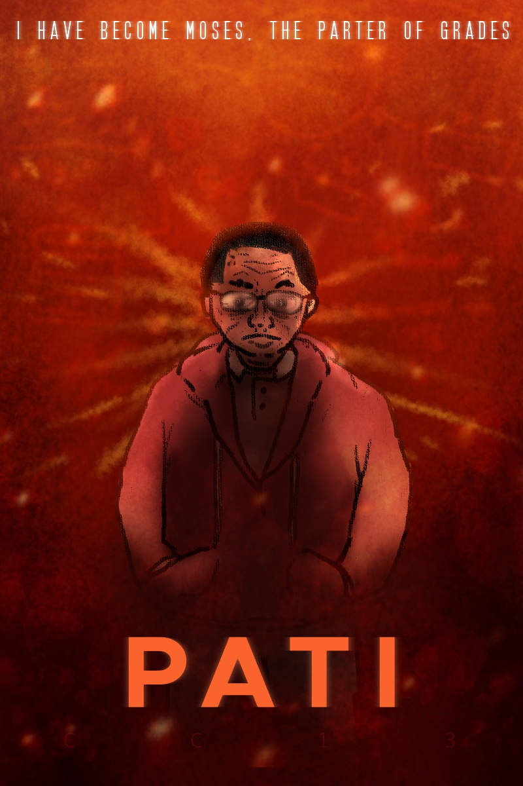

ART
I occassionally do digital art. My style leans more into cartoonish rather than realism.
To the right is my depiction of Dr Felipe Pati Jr, being one of the iconic teachers of my University.
Please do not let him know about this, at all costs.

MUSIC
I tend to compose music digitally. I often use open-source freeware as DAWs such as Ultrabox.
As a sample, below is one of my compositions named
"Double Time! Over Time!"
GAMES
I play a lot of video games in my free time. I often sink time into games I already play.
More often than not, I buy and play games on the Steam platform. With the exeption of Minecraft and Roblox.
At some point, I plan to make my own video game, as the indie scene is getting more popular.